Definiendo íconos
Es posible modificar las imágenes con que se mostrarán los equipos en el mapa presentado por Nagios. Podemos visualizar el nombre de los íconos que se mostraran en el mapa en:
ls -l /usr/share/nagios/htdocs/images/logos | less
Para salir de la vista, presionar la letra q (quit).
Descargando íconos desde el servidor Nagios¶
Otra opción interesante para visualizar gráficamente los íconos precargados de Nagios consiste en descargar la carpeta que los contiene desde el servidor.
Para ello, instalaremos un cliente FTP como, por ejemplo, Filezilla.
Una vez instalado el programa, hacemos clic sobre el ícono Gestor de sitios:
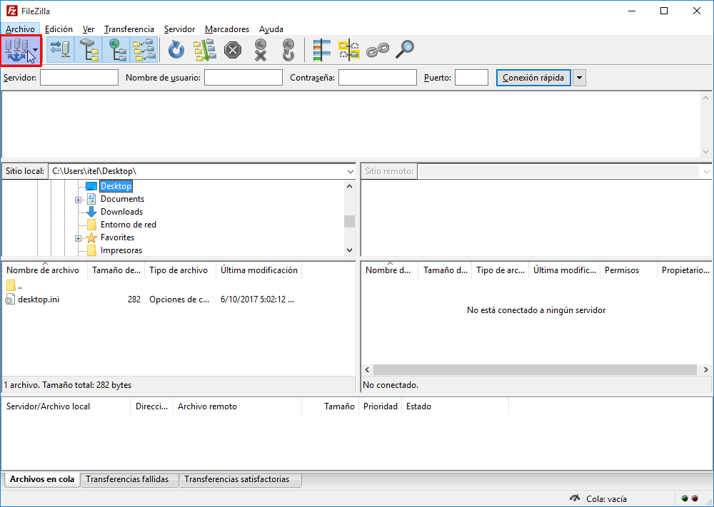
Se desplegará un cuadro de diálogo en el cual hacemos clic en Nuevo sitio:
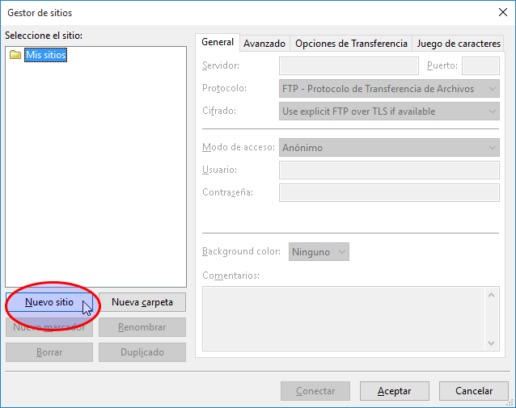
Y allí completamos el formulario con los datos de nuestro servidor Nagios, según se muestra en la imagen y damos clic en Aceptar para guardar los cambios.
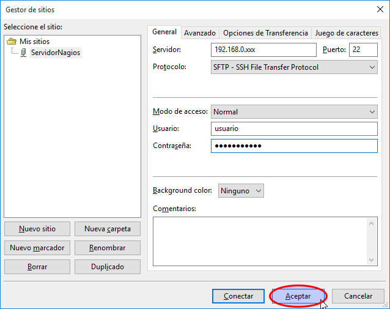
Si volvemos a hacer clic en el botón Gestor de sitios veremos la conexión a nuestro servidor realizada con anterioridad. Hacemos clic en Conectar:
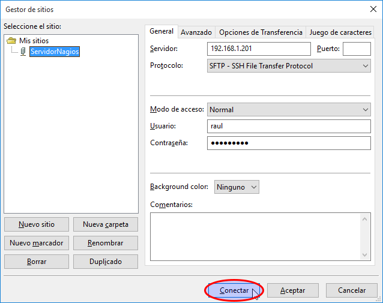
Como se trata de una conexión segura (SFTP) el programa nos preguntará si deseamos intercambiar claves de cifrado con el servidor. Hacemos clic en Aceptar:
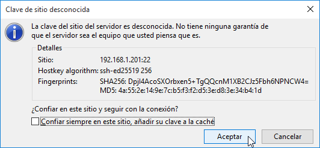
De esta manera, en la ventana izquierda del programa veremos nuestros archivos de Windows y en la ventana derecha, la carpeta home de nuestro usuario en el servidor Nagios:
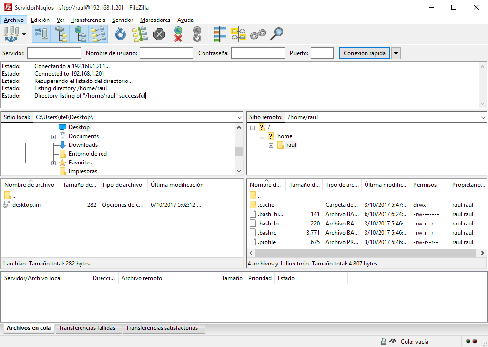
A continuación nos desplazamos hacia la carpeta /usr/share/nagios/htdocs/images/ que contiene los íconos preinstalados de Nagios que se mostrarán en la vista de mapa:
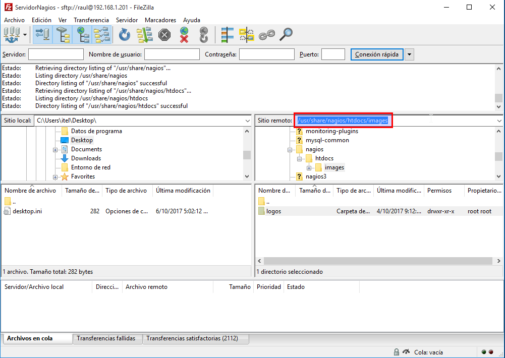
Haciendo clic derecho sobre la carpeta en cuestión podemos descargar los archivos de imagen de ícono para visualizaros con mayor comodidad:
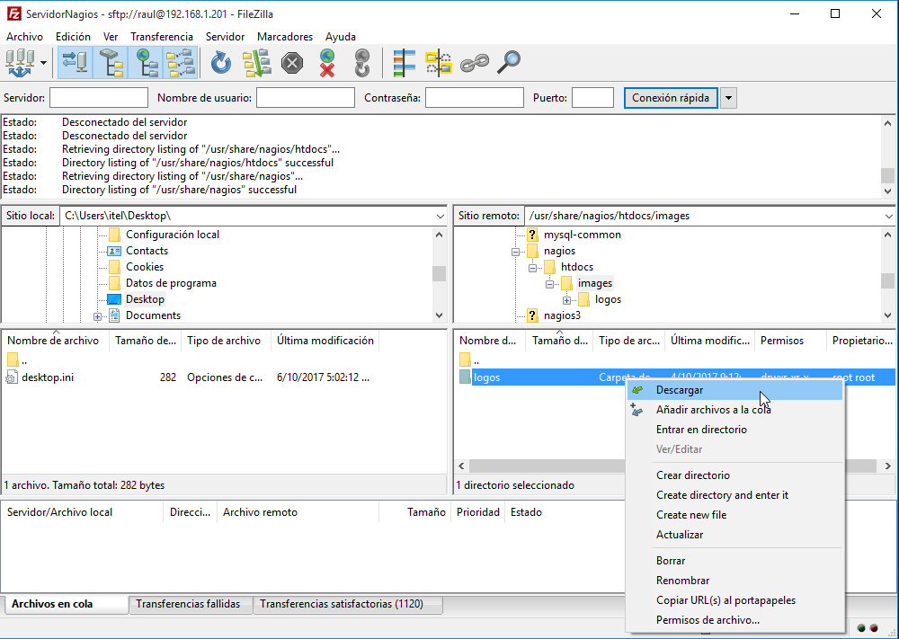
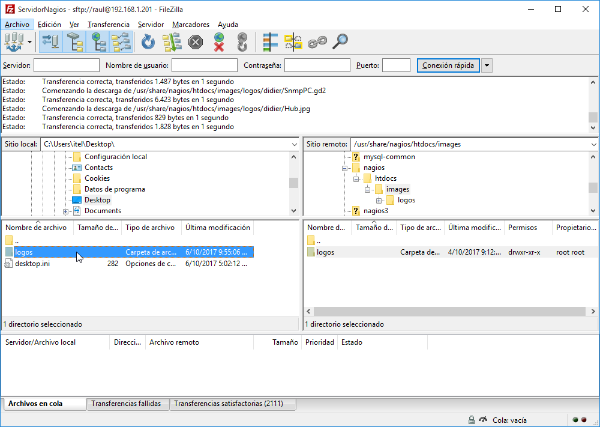
Dentro de la carpeta de íconos, encontramos distintos tipos, donde la carpeta base contiene los íconos por defecto:
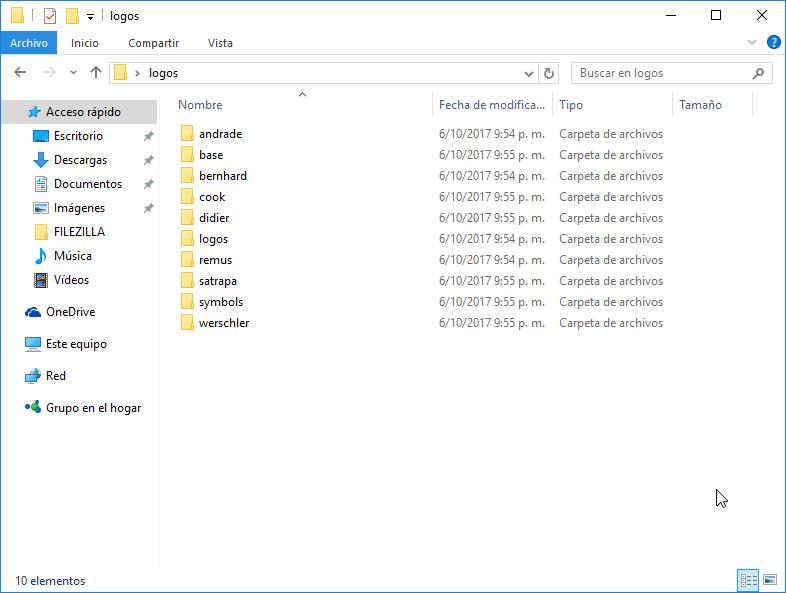
Por ejemplo, el contenido de la carpeta logos:
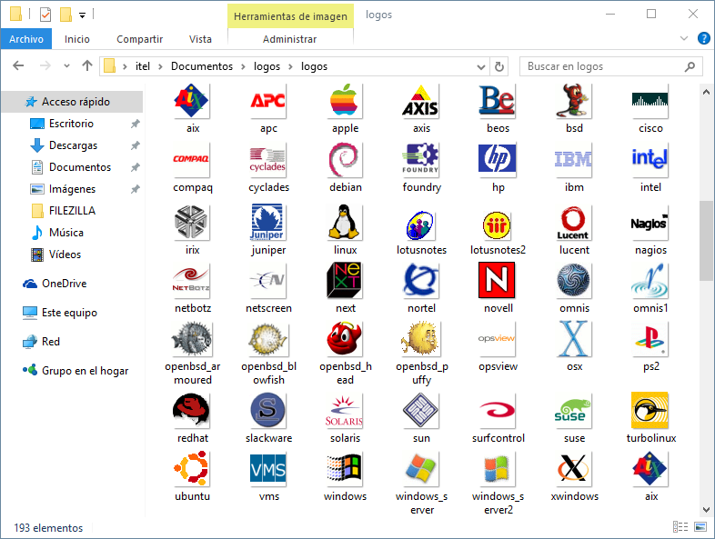
Podés encontrar paquetes de íconos adicionales en las siguientes direcciones:
Definiendo íconos de la vista mapa¶
Nagios ofrece una vista de mapa, a la cual se accede desde la opción Map del menú lateral izquierdo, que permite una vista global del estado de los hosts de manera gráfica. Los íconos que representan cada host pueden ser modificados convenientemente.
Para personalizar los íconos con los que se mostrarán los hosts abrimos el archivo iconos.cfg creado con anterioridad:
sudo vim /etc/nagios4/objetos/iconos.cfg
Dentro del archivo incluimos código similar al que sigue. Obviamente, deberemos adaptarlo a nuestras necesidades:
# Definiendo íconos para un equpo (individualmente)
define hostextinfo {
host_name router1
icon_image routerNuevo.png
icon_image_alt Router de la sala principal
statusmap_image routerNuevo.gd2
vrml_image routerNuevo.png
}
# Definiendo íconos para todos los miembros de un grupo
define hostextinfo {
hostgroup_name sala1
icon_image computer.png
icon_image_alt Equipos de la Sala 1
statusmap_image computer.gd2
vrml_image computer.png
}
Por ejemplo, tomando un ícono entre los ofrecidos por Nagios para un host llamado windowsServer:
# Definiendo íconos para un equpo (individualmente)
define hostextinfo {
host_name windowsServer
icon_image logos/windows_server.png
icon_image_alt Windows Server 2012
statusmap_image logos/windows_server.gd2
vrml_image logos/windows_server.png
}
Sobre los íconos
Los íconos se pueden configurar para:
-
un equipo en particular, mediante la directiva host_name o
-
para un grupo de equipos empleando la directiva hostgroup_name.
Por último, tendremos que verificar la configuración y reiniciar el servidor Nagios para guardar los cambios que hayamos introducido.
Creando nuestro propios íconos¶
Nagios aloja las imágenes (iconos) que se mostrarán en el mapa en /usr/share/nagios/htdocs/images.
Dentro de esta carpeta debemos copiar nuestros iconos personalizados.
Al crear nuestra imagen deberemos tener en cuenta el formato de la misma:
- Medida: 40x40 píxeles
- Formato: png (transparente)
Luego tendremos que convertir la imagen al resto de los formatos, todos necesarios para una correcta visualización del mapa de Nagios, a saber: .gif y .gd2. Por ejemplo, suponiendo que nuestra imagen se llama iconoPersonalizado, deberíamos tener al final tres versiones de la misma:
- iconoPersonalizado.png
- iconoPersonalizado.gd2
- iconoPersonalizado.gif
Instalando las herramientas¶
Para poder realizar la conversión de formato de imágenes necesitaremos instalar las siguientes herramientas: imagemagick, libgd-tools y netpbm.
sudo apt-get install libgd-tools netpbm imagemagick
Convirtiendo .png a .gd2¶
Para convertir una imagen .png a un icono .gd2 ejecutamos el siguiente comando:
pngtogd2 iconoPersonalizado.png iconoPersonalizado.gd2 1 1
Donde iconoPersonalizado.png es la imagen .png que deseamos convertir e iconoPersonalizado.gd2 es el nombre de la imagen convertida en formato .gd2. El parámetro 1 1 indica que la conversión debe crearse en formato raw (crudo), y que el archivo debe crearse sin compresión.
Convirtiendo .png a .gif¶
Para realizar esta conversión, simplemente ejecutamos:
convert iconoPersonalizado.png iconoPersonalizado.gif
Redimensionando nuestro icono¶
Es probable que nuestro icono en formato .png no posea la medida requerida por Nagios (40x40 pixeles) ni sea transparente. En ese caso podemos salvar la cuestión ejecutando algunos comandos en la terminal.
Convertimos la imagen al formato netpbm (pnm - portable anymap format):
pngtopnm iconoPersonalizado.png > iconoPersonalizado.pnm
Finalmente, redimensionamos la imagen y tornamos el fondo transparente obteniendo un nuevo archivo .png:
pnmtopng -transparent =rgb:00/00/00 -phys 40 40 1 iconoPersonalizado.pnm > iconoPersonalizado.png